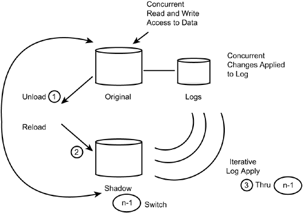

|
|
< Day Day Up > |
|
The REORG UtilityThe REORG utility can be used to reorganize DB2 table spaces and indexes, thereby improving the efficiency of access to those objects. Reorganization is required periodically to ensure that the data is situated in an optimal fashion for subsequent access. Reorganization reclusters data, resets free space to the amount specified in the CREATE DDL, and deletes and redefines the underlying VSAM data sets for STOGROUP-defined objects. There are three types of reorganizations supported by the DB2 REORG utility:
Proper planning and scheduling of the REORG utility is a complex subject. Many factors influence the requirements for executing the REORG utility. The following topics highlight the necessary decisions for implementing an efficient REORG policy in your DB2 environment. Recommended Reorganization StandardsYou should develop rigorous standards for the REORG utility because it is one of the most significant aids in achieving optimal DB2 performance. The standard will influence the input to the REORG utility, the REORG job streams, and the rerun and restart procedures for REORG utilities. As with the LOAD utility, there are two philosophies for implementing the REORG utility. Individual databases, table spaces, and applications can mix and match philosophies. One philosophy, however, should be chosen for every non-read-only table space and index in every DB2 application. Failure to follow a standard reorganization philosophy and schedule will result in poorly performing DB2 applications. The REORG philosophy must be recorded and maintained for each table space and index created. The philosophies presented here strike a balance between programmer productivity, ease of use and comprehension by operations and control staff, and the effective use of DB2 resources. Reorganization PhilosophiesTwo REORG philosophies can be adopted by DB2-based application systems. The first, which is generally the recommended philosophy, is more time consuming to implement but easier to support. It requires that sufficient DASD be reserved to catalog the REORG work data sets if the REORG job abends. The three work data sets for the REORG job are allocated for the SYSREC, SYSUT1, and SORTOUT DDNAMEs with DISP=(MOD,DELETE,CATLG). This specification enables the data sets to be allocated as new for the initial running of the REORG job. If the job abends, however, it will catalog the data sets for use in a possible restart. After the step completes successfully, the data sets are deleted. The space for these data sets must be planned and available before the REORG job is executed. The sample REORG JCL in Listing 33.4 follows this philosophy. By creating your REORG job according to this philosophy, you can restart an abending REORG job with little effort after the cause of the abend has been corrected. You simply specify one of the RESTART options in the UTPROC parameter for DSNUTILB. Listing 33.4. REORG JCL (Restartable)
//DB2JOBU JOB (UTILITY),'DB2 REORG',MSGCLASS=X,CLASS=X,
// NOTIFY=USER
//*
//****************************************************************
//*
//* DB2 REORG UTILITY (RESTARTABLE)
//*
//****************************************************************
//*
//UTIL EXEC DSNUPROC,SYSTEM=DSN,UID='REORGTS',UTPROC="
//*
//* UTILITY WORK DATASETS
//*
//DSNUPROC.SORTWK01 DDUNIT=SYSDA,SPACE=(CYL,(2,1))
//DSNUPROC.SORTWK02 DDUNIT=SYSDA,SPACE=(CYL,(2,1))
//DSNUPROC.SORTOUT DD DSN=CAT.SORTOUT,DISP=(MOD,DELETE,CATLG),
// UNIT=SYSDA,SPACE=(CYL,(2,1))
//DSNUPROC.SYSUT1 DD DSN=CAT.SYSUT1,DISP=(MOD,DELETE,CATLG),
// UNIT=SYSDA,SPACE=(CYL,(2,1)),DCB=BUFNO=20
//DSNUPROC.SYSREC DD DSN=OUTPUT.DATASETD,DISP=(MOD,CATLG,CATLG),
UNIT=SYSDA,SPACE=(CYL,(15,5)),DCB=BUFNO=20
//DSNUPROC.SYSPRINT DD SYSOUT=*
//DSNUPROC.UTPRINT DD SYSOUT=*
//*
//* UTILITY INPUT CONTROL STATEMENTS
//* The REORG statement reorganizes the second partition
//* of DSN8D81A.DSN8S81E.
//*
//DSNUPROC.SYSIN DD *
REORG TABLESPACE DSN8D81A.DSN8S81E PART 2
/*
//
The second philosophy is easier to implement but more difficult to support. No additional DASD is required because all REORG work data sets are defined as temporary. Therefore, upon abnormal completion, all interim work data sets are lost. See Listing 33.5 for sample JCL. Listing 33.5. REORG JCL (Nonrestartable)//DB2JOBU JOB (UTILITY),'DB2 REORG',MSGCLASS=X,CLASS=X, // NOTIFY=USER,REGION=0M //* //**************************************************************** //* //* DB2 REORG UTILITY (NON-RESTARTABLE) //* //**************************************************************** //* //UTIL EXEC DSNUPROC,SYSTEM=DSN,UID='REORGTS',UTPROC=" //* //* UTILITY WORK DATASETS //* //DSNUPROC.SORTWK01 DDUNIT=SYSDA,SPACE=(CYL,(2,1)) //DSNUPROC.SORTWK02 DDUNIT=SYSDA,SPACE=(CYL,(2,1)) //DSNUPROC.SORTOUT DD DSN=&&SORTOUT, // UNIT=SYSDA,SPACE=(CYL,(2,1)) //DSNUPROC.SYSUT1 DD DSN=&&SYSUT1, // UNIT=SYSDA,SPACE=(CYL,(2,1)),DCB=BUFNO=20 //DSNUPROC.SYSREC DD DSN=&&SYSREC, // UNIT=SYSDA,SPACE=(CYL,(15,5)),DCB=BUFNO=20 //DSNUPROC.SYSPRINT DD SYSOUT=* //DSNUPROC.UTPRINT DD SYSOUT=* //* //* UTILITY INPUT CONTROL STATEMENTS //* 1. The first REORG statement reorganizes the //* named table space. //* 2. The second REORG statement reorganizes the //* named index. //* //DSNUPROC.SYSIN DD * REORG TABLESPACE DSN8D81A.DSN8S81D REORG INDEX (DSN8810.XACT1) /* // To restart this REORG job, you must determine in which phase the job failed. If it failed in any phase other than the UTILINIT phase or UNLOAD phase, you must restore the table space being reorganized to a previous point. You can do this by running either the RECOVER TOCOPY utility or a simple RECOVER (if the LOG NO option of the REORG utility was specified). After restoring the table space (and possibly its associated indexes), you must correct the cause of the abend, terminate the utility, and rerun the job. As you can see, this method is significantly more difficult to restart. Try to use the first philosophy rather than the second. The first reorganization philosophy makes recovery from errors as smooth and painless as possible. Reorganization FrequencyThe frequency of reorganization is different for every DB2 application. Sometimes the reorganization frequency is different for table spaces and indexes in the same application because different data requires different reorganization schedules. These schedules depend on the following factors:
The scheduling of reorganizations should be determined by the DBA, taking into account the input of the application development team as well as end-user requirements. The following information must be obtained for each DB2 table to determine the proper scheduling of table space and index reorganizations:
Most of this information can be obtained from the DB2 Catalog if the application already exists. For new application table spaces and indexes, this information must be based on application specifications, user requirements, and estimates culled from any existing non-DB2 systems. Letting REORG Decide When to ReorganizeYou can use the OFFPOSLIMIT, INDREFLIMIT, and LEAFDISTLIMIT options of the REORG utility to determine whether a reorganization will be useful. OFFPOSLIMIT and INDREFLIMIT apply to table space reorganization; LEAFDISTLIMIT applies to index reorganization. The OFFPOSLIMIT parameter uses the NEAROFFPOSF, FAROFFPOSF, and CARDF statistics from SYSIBM.SYSINDEXPART to gauge the potential effectiveness of a REORG. To use OFFPOSLIMIT, specify the clause with an integer value for the REORG. For the specified partitions, the value will be compared to the result of the following calculation: (NEAROFFPOSF + FAROFFPOSF) ? 100 / CARDF If any calculated value exceeds the OFFPOSLIMIT value, REORG is performed. The default value for OFFPOSLIMIT is 10. The INDREFLIMIT parameter uses the NEARINDREF, FARINIDREF, and CARDF statistics from SYSIBM.SYSINDEXPART to gauge the potential effectiveness of a REORG. To use INDREFLIMIT, specify the clause with an integer value for the REORG. For the specified partitions, the value will be compared to the result of the following calculation: (NEARINDREF + FARINDREF) ? 100 / CARDF If any calculated value exceeds the INDREFLIMIT value, REORG is performed. The default value for INDREFLIMIT is 10. CAUTION OFFPOSLIMIT and INDREFLIMIT cannot be used for LOB table spaces. The parameters can be specified for any other type of table space. You can use the LEAFDISTLIMIT option to allow REORG to determine whether reorganizing an index is recommended. To use LEAFDISTLIMIT, specify the clause with an integer value for the REORG. For the specified index, the value will be compared to the LEAFDIST value in SYSIBM.SYSINDEXPART. If any LEAFDIST exceeds the value specified for LEAFDISTLIMIT, REORG is performed. The default value for LEAFDISTLIMIT is 200. If the REPORTONLY keyword is specified, a report is generated indicating whether the REORG should be performed or not. The actual REORG will not be performed. You can use the REORG utility in conjunction with REPORTONLY and the INDREFLIMIT and OFFPOSLIMIT keywords for table spaces or the LEAFDISTLIMIT keyword for indexes, to produce reorganization reports. Further information on determining the frequency of reorganization is provided in Part IV, "DB2 Performance Monitoring," and Part V, "DB2 Performance Tuning." Reorganization Job StreamThe total reorganization schedule should include a RUNSTATS job or step (or use of in-line statistics), two COPY jobs or steps for each table space being reorganized, and a REBIND job or step for all plans using tables in any of the table spaces being reorganized. The RUNSTATS job is required to record the current table space and index statistics to the DB2 Catalog. This provides the DB2 optimizer with current data to use in determining optimal access paths. Of course, supplying the STATISTICS parameter to the REORG job would cause statistics to be collected during the REORG, and therefore a separate RUNSTATS step would not be needed. An image copy should always be taken immediately before any table space REORG is run. This ensures that the data is recoverable, because the REORG utility alters the physical positioning of application data. The second COPY job is required after the REORG if it was performed with the LOG NO option. The second COPY job or step can be eliminated if an inline COPY is performed during the REORG. Similar to the inline COPY feature of LOAD, a SHRLEVEL REFERENCE full image copy can be performed as a part of the REORG. To create an inline copy, use the COPYDDN and RECOVERYDDN keywords. You can specify up to two primary and two secondary copies. When a REORG job runs with the LOG NO option, DB2 turns on the copy pending flag for each table space specified in the REORG (unless inline copy is used). The LOG NO parameter tells DB2 not to log the changes. This minimizes the performance impact of the reorganization on the DB2 system and enables your REORG job to finish faster. When the LOG NO parameter is specified, you must take an image copy of the table space after the REORG has completed and before it can be updated. It is good practice to back up your table spaces after a reorganization anyway. A REBIND job for all production plans should be included to enable DB2 to create new access paths based on the current statistics provided by the RUNSTATS job. If all the table spaces for an application are being reorganized, each utility should be in a separate job—one REORG job, one RUNSTATS job, one COPY job, and one REBIND job. These common jobs can be used independently of the REORG job. If isolated table spaces in an application are being reorganized, it might be acceptable to perform the REORG, RUNSTATS, COPY, and REBIND as separate steps in a single job. Follow your shop guidelines for job creation standards. Estimating REORG Work Data Set SizesThe REORG utility requires the use of work data sets to reorganize table spaces and indexes. The following formulas help you estimate the sizes for these work data sets. More complex and precise calculations are in the DB2 Utility Guide and Reference manual, but these formulas should produce comparable results. SYSREC = (number of pages in table space) x 4096 x 1.10 NOTE If the table space being reorganized uses 32K pages, multiply the SYSREC number by 8. The total number of pages used by a table space can be retrieved from either the VSAM LISTCAT command or the DB2 Catalog, as specified in the NACTIVE column of SYSIBM.SYSTABLESPACE. If you use the DB2 Catalog method, ensure that the statistics are current by running the RUNSTATS utility (discussed in Chapter 34, "Catalog Manipulation Utilities"). An additional 10 percent of space is specified because of the expansion of variable columns and the reformatting performed by the REORG UNLOAD phase. SORTOUT = (size of the largest index key + 12) x (largest number of rows to be loaded to a NOTE If any number in the SORTOUT calculation is 0, substitute 1. The multiplier 1.2 is factored into the calculation to provide a "fudge factor." If you are absolutely sure of your numbers, the calculation can be made more precise by eliminating the additional multiplication of 1.2. SYSUT1 = (size of the largest index key + 12) x (largest number of rows to be loaded to a NOTE If any number in the SYSUT1 calculation is 0, substitute 1. The multiplier 1.2 is factored into the calculation to provide a "fudge factor." If you are absolutely sure of your numbers, the calculation can be made more precise by eliminating the additional multiplication of 1.2. SORTWKxx = (size of SYSUT1) x 2 NOTE If any number in the SORTWKxx calculation is 0, substitute 1. After calculating the estimated size in bytes for each work data set, convert the number into cylinders, rounding up to the next whole cylinder. Allocating work data sets in cylinder increments enhances the utility's performance. REORG INDEX PhasesThe REORG utility consists of the following six phases when run for an index:
REORG TABLESPACE PhasesThe REORG utility consists of ten phases when run on a table space: NOTE
REORG TABLESPACE Phases for LOB Table SpacesThe REORG utility consists only of three phases when run against a LOB table space:
REORG Rerun/Restart ProceduresThe REORG restart procedure depends on the phase that was running when the failure occurred. There are two ways to determine the phase in which the failure occurred. The first method is to issue the DISPLAY UTILITY command to determine which utilities are currently active, stopped, or terminating in the DB2 system. The format of the command is -DISPLAY UTILITY(*) The second way to determine the abending phase is to view the SYSPRINT DD statement of the REORG step. This method is not as desirable as the first, but it is the only method you can use when the DB2 system is down. At the completion of each phase, DB2 prints a line stating that the phase has finished. You can assume that the phase immediately following the last phase reported complete in the SYSPRINT DD statement is the phase that was executing when the abend occurred. After determining the phase of the REORG utility at the time of the abend, follow the steps outlined here to restart or rerun the reorganization. In the following procedures, it is assumed that your REORG processing is restartable. If the abend occurred in the UTILINIT phase
If the abend occurred in the UNLOAD phase
If the abend occurred in the RELOAD phase
If the abend occurred in the SORT phase
If the abend occurred in the BUILD phase
For abends in the SORT, BUILD, or LOG phases, the SHRLEVEL option can impact the response:
If the abend occurred in the SWITCH phase
If the abend occurred in the BUILD2 phase
If the abend occurred in the UTILTERM phase
CAUTION You cannot restart a REORG on a LOB table space if it is in the REORGLOB phase. Be sure to take a full image COPY of the LOB table space before executing REORG if the LOB table space was defined specifying LOG NO. Failure to do so will place the recoverability of the LOB table space in jeopardy. Any LOB table space defined with LOG NO, will be in COPY pending status after REORG finishes. Gathering Inline Statistics During the REORGYou can generate statistics during the execution of the REORG utility. This is referred to as inline RUNSTATS. Up-to-date statistics will be generated during the REORG instead of requiring an additional RUNSTATS step. To generate inline RUNSTATS, use the STATISTICS keyword. You can gather table space statistics, index statistics, or both. By generating statistics during the REORG, you can accomplish two tasks with one I/O (reorganization and statistics collection) and also avoid the need to schedule an additional RUNSTATS step after the REORG. REORG and the SHRLEVEL ParameterSimilar to the functionality of SHRLEVEL in other DB2 utilities, the SHRLEVEL parameter controls the level of concurrent data access permitted during a REORG. There are three SHRLEVEL options for REORG: NONE, REFERENCE, and CHANGE. SHRLEVEL NONE indicates that concurrent data reading is permitted while data is being unloaded, but no access is permitted during the RELOAD phase and subsequent phases. This is the default and is the manner in which REORG is executed for all versions of DB2 prior to V5. SHRLEVEL REFERENCE indicates that concurrent read access is permitted during both the UNLOAD and RELOAD phases of the REORG. SHRLEVEL CHANGE indicates concurrent read and write access is available throughout most of the reorganization. Both SHRLEVEL REFERENCE and SHRLEVEL CHANGE require a shadow copy of the object being reorganized. Using SHRLEVEL CHANGE to Achieve Online ReorganizationData availability can be greatly enhanced through the use of SHRLEVEL CHANGE when reorganizing table spaces. This option, known as Online REORG or Concurrent REORG, allows full read and write access to the data during most phases of the REORG utility. This is achieved by duplicating the data that is to be reorganized (refer to Figure 33.1). Online REORG takes the following steps:
Figure 33.1. Concurrent REORG processing.
vcat.DSNDBx.dddddddd.ssssssss.y0001.znnn The y0001 component is used with fast switch. DB2 will switch back-and-forth between using i0001 and j0001 for this component of the data set name. The first time your REORG with fast switch enabled, when the REORG completes the j0001 data sets will be in use—and the i0001 data sets will be deleted. The next time you run an online REORG the same thing is done, but then with J data sets becoming I data sets again. Alternating between I and J continues every time you reorganize. Set SPRMURNM=1 in DSNZPARM to enable fast switch for all online REORGs. The IPREFIX column of SYSIBM.SYSTABLEPART and SYSIBM.SYSINDEXPART can be queried to determine whether the current active data set uses I or J. Online REORG DrawbacksOnline REORG should not be used all of the time because there are drawbacks to its use. First and foremost, is the need to have excess disk space to store the shadow copy. The shadow copy typically consumes at least as much space as the object being reorganized. More space may be required because REORG reclaims free space. Because of the need to apply changes from the log, online REORG is most effectively used when transaction throughput is low and most transactions are of short duration. Furthermore, avoid scheduling REORG with SHRLEVEL CHANGE when low-tolerance applications are executing. Third-party online reorganization products are available that offer better concurrency during higher volume transaction processing. The Mapping TableA mapping table must be specified whenever a SHRLEVEL CHANGE reorganization is run. The mapping table is used by REORG to map between the RIDs of records in the original copy and the like RIDs in the shadow copy. The mapping table must use the following definition as a template:
CREATE TABLE table-name
(TYPE CHAR(1) NOT NULL,
SOURCE_RID CHAR(5) NOT NULL,
TARGET_XRID CHAR(9) NOT NULL,
LRSN CHAR(6) NOT NULL
);
Additionally, an index must be created for the mapping table using the following template: CREATE TYPE 2 UNIQUE INDEX index-name ON TABLE table-name (SOURCE_RID ASC, TYPE, TARGET_XRID, LRSN ); Be careful when assigning the mapping objects to buffer pools. Do not assign these objects to BP0 or other sensitive buffer pools. For example, do not place mapping objects in the same buffer pool as the objects being reorganized. Additionally, when running an online REORG when application traffic is high, be sure to adjust the output log buffer (OUTBUF) to be large enough to contain the changes. Create the table in a segmented table space explicitly set aside for the use of the mapping table. Multiple mapping tables can be created in the segmented table space if concurrent online REORGs are required to be run. One mapping table is required per online REORG execution. Although a single mapping table can be reused for multiple REORGs, they cannot be concurrent REORGs. Consider specifying LOCKSIZE TABLE for the table space containing the mapping table because concurrent tasks will not access the mapping table. Any name can be used for the mapping table as long as it conforms to the DB2 restrictions on table names. It is wise to create a naming standard to identify mapping tables as such. For example, you may want to name all mapping tables beginning with a prefix of MAP_. CAUTION Explicit creation of shadow copy data sets is required only if the object being reorganized uses user-defined VSAM data sets instead of STOGROUPs. This is yet another reason to use STOGROUPs instead of user-defined VSAM. Online REORG OptionsThere are several additional options that can be used in conjunction with online REORG. These options are briefly discussed in this section. MAXROThe MAXRO option is an integer that specifies the amount of time for the last iteration of log processing for the online REORG. DB2 continues to iteratively apply log records until it determines that the next iteration will take less than the indicated MAXRO value. Of course, the actual execution time for the last iteration may actually exceed the MAXRO value. Specifying a small positive MAXRO value reduces the length of the period of read-only access, but it might increase the elapsed time for REORG to complete. If you specify a huge positive value, the second iteration of log processing is probably the last iteration. NOTE The ALTER UTILITY command can be used to change the value of MAXRO during the execution of an online REORG. The MAXRO parameter can also be set to DEFER an integer value. The DEFER option indicates that log processing iterations can continue indefinitely. If DEFER is specified, the online REORG will not start the final log processing iteration until the MAXRO value is modified using the ALTER UTIL command. When DEFER is specified and DB2 determines that the time for the current iteration and the estimated time for the next iteration are both less than five seconds, DB2 will send a message to the console (DSNU362I) indicating that a pause will be inserted before the next log iteration. When running an online REORG specifying DEFER, the operator should scan for DSNU362I messages to determine when to issue an ALTER UTIL command to change the MAXRO value. The DEFER parameter should always be used in conjunction with LONGLOG CONTINUE. LONGLOGThe LONGLOG parameter designates how DB2 will react if the number of records that the next log processing iteration is not lower than the number that the previous iterations processed. If this occurs, the REORG log processing may never catch up to the write activity of the concurrently executing transactions and programs. If LONGLOG CONTINUE is specified, DB2 will continue processing the REORG until the time on the JOB statement expires. When MAXRO DEFER is used in conjunction with LONGLOG CONTINUE, the online REORG continues with read/write access still permitted to the original table space, partition, or index. When the switch to the shadow copy is required, an operator or DBA must issue the ALTER UTIL command with a large integer MAXRO value. CONTINUE is the default LONGLOG value. If LONGLOG TERM is specified, DB2 terminates reorganization after the delay specified by the DELAY parameter (discussed in the next section). If LONGLOG DRAIN is specified, DB2 drains the write claim class after the delay specified by the DELAY parameter, thereby forcing the final log processing iteration to happen. DELAYThe DELAY parameter is used in conjunction with the LONGLOG parameter. It indicates the minimum amount of time before the TERM or DRAIN activity is performed. DEADLINEThe DEADLINE parameter provides a mechanism for shutting off an online REORG. If DB2 determines that the switch phase will not finish by the deadline, DB2 terminates the REORG. If DEADLINE NONE is specified, there is no deadline and the REORG can continue indefinitely. This is the default option. If DEADLINE timestamp is specified, the REORG must finish before the specified date and time deadline. This indicates that the switch phase of the log processing must be finished by the timestamp provided. CAUTION The timestamp provided to the DEADLINE parameter must be in the future. The REORG will not commence if the date/time combination has already passed. REORG TABLESPACE Locking ConsiderationsThe REORG TABLESPACE utility, regardless of the execution options specified, can run concurrently with the following utilities (each accessing the same object):
When REORG TABLESPACE is run specifying SHRLEVEL NONE and UNLOAD ONLY, the following additional utilities can be run concurrently:
The REORG TABLESPACE utility when run specifying UNLOAD ONLY will drain all write claim classes for the table space or partition being reorganized. Additionally, if a clustering index exists, the REORG utility will drain all write claim classes for the index or partition. REORG TABLESPACE SHRLEVEL NONEWhen REORG TABLESPACE SHRLEVEL NONE is executed with the UNLOAD CONTINUE or UNLOAD PAUSE options, the following locking activity occurs:
REORG TABLESPACE SHRLEVEL REFERENCEWhen REORG TABLESPACE SHRLEVEL REFERENCE is executed with the UNLOAD CONTINUE or UNLOAD PAUSE options, the following locking activity occurs:
REORG TABLESPACE SHRLEVEL CHANGEWhen REORG TABLESPACE SHRLEVEL CHANGE is executed with the UNLOAD CONTINUE or UNLOAD PAUSE options, the following locking activity occurs:
REORG INDEX Locking ConsiderationsThe REORG INDEX utility is compatible with the following utilities:
SHRLEVEL NONEWhen REORG INDEX SHRLEVEL NONE is executed, the write claim class is drained for the index or index partition during the UNLOAD phase and all claim classes are drained during both the SORT and BUILD phase. Remember, the SORT phase can be skipped. SHRLEVEL REFERENCEWhen REORG INDEX SHRLEVEL REFERENCE is executed, the write claim class is drained for the index or index partition during the UNLOAD phase—all claim classes are drained during the SWITCH phase. SHRLEVEL CHANGEWhen REORG INDEX SHRLEVEL CHANGE is executed, the read claim class is claimed for the index or index partition during the UNLOAD phase. Additionally, the write claim class is drained during the last iteration of the log processing—all claim classes are drained during both the SWITCH phase. REORG GuidelinesBy adhering to the following guidelines, you will ensure efficient and effective reorganization of DB2 table spaces. Ensure That Adequate Recovery Is AvailableTake an image copy of every table space to be reorganized before executing the REORG utility. All image copies taken before the reorganization are marked as invalid for current point-in-time recovery by the REORG utility. These image copies can be used only with the TORBA or TOCOPY options of the RECOVER utility. Take an image copy of every table space reorganized after using the LOG NO option of the REORG utility. All table spaces reorganized with the LOG NO option are placed into copy pending status. Analyze Clustering Before ReorganizingConsider the CLUSTER RATIO of a table space before reorganizing. If the table space to be reorganized is not clustered, specify the SORTDATA parameter. The SORTDATA option causes the data to be unloaded according to its physical sequence in the table space. The data is then sorted in sequence by the clustering index columns. If the SORTDATA parameter is not specified, the table space data is unloaded using the clustering index, which is highly efficient when the table space is clustered. If the table space is not clustered, however, unloading by the clustering index causes REORG to scan the table space data in an inefficient manner. Refer to Chapter 26, "DB2 Object Monitoring Using the DB2 Catalog and RTS," for DB2 Catalog queries to obtain cluster ratio. DB2 does not consider a default clustering index to be clustering for the purposes of unloading for a REORG. Only an explicitly created clustering index, if available, will be used. If the cluster ratio for a table space is less than 90%, consider using the SORTDATA option. When data is less than 90% clustered, unloading physically and sorting is usually more efficient than scanning data. Furthermore, the DBA statistics NEAROFFPOS and FAROFFPOS can be used to judge whether to use the SORTDATA option. Monitor the results of the REORG utility with and without the SORTDATA option, however, to gauge its effectiveness with different application table spaces. NOTE Use of the SORTDATA option can increase the sort work requirements of the REORG utility, especially for tables with long rows and few indexes. Rebalance Partitions Using REORGAs of DB2 V8, you can rebalance table space partitions using the new REBALANCE parameter. Specifying this parameter causes DB2 to rebalance the data such that it is evenly distributed across the partitions. More details on this options can be found in Chapter 7, "Database Change Management and Schema Evolution." Follow General Reorganization RulesOne rule of thumb for smaller indexes is to reorganize the number of levels is greater than four. For indexes on larger tables four (or more) levels may be completely normal. Other indicators that signify a REORG INDEX is needed are when the LEAFDIST value is large or PSEUDO_DEL_ENTRIES has grown. Reorganize table spaces when the CLUSTER RATIO drops below 95% or when FARINDREF is large. Reorganizing a large table space as soon as the CLUSTER RATIO is not 100% could produce significant performance gains. Consider Using SORTKEYSREORG provides a SORTKEYS parameter similar to the SORTKEYS parameter of LOAD. When more than multiple indexes exist and need to be created, consider using the SORTKEYS keyword. When SORTKEYS is specified, index keys are sorted in parallel with the RELOAD and BUILD phases, thereby improving performance. An estimate of the number of keys to be sorted can be supplied. To estimate the number of keys to sort, use the following calculation:
Number of Keys = (Total number of rows in the table) x
[(number of indexes on the table) +
(number of foreign keys)]
Consider Using NOSYSRECThe NOSYSREC option can be used so that the REORG process does not require unload data set. This can enhance performance because intermediate disk I/O is eliminated. To use the NOSYSREC option, neither the UNLOAD PAUSE nor the UNLOAD ONLY options can be used. Furthermore, you must specify SORTDATA, and SHRLEVEL REFERENCE or SHRLEVEL CHANGE. However, the NOSYSREC option affects the restartability of the REORG utility. For a SHRLEVEL REFERENCE table space REORG, if an error occurs during the RELOAD phase, you must restart at the UNLOAD phase, effectively unloading all of the data again. This is so because the previously unloaded data has not been saved to disk. Likewise, for a REORG TABLESPACE SHRLEVEL NONE, if an error occurs during the RELOAD phase, a RECOVER TABLESPACE is required. Therefore, it is wise to create an image copy prior to running REORG SHRLEVEL NONE with the NOSYSREC option. Consider Specifying REUSEWhen the REUSE option is used in conjunction with SHRLEVEL NONE, the REORG utility will logically reset and reuse STOGROUP-managed data sets without deleting and redefining them. If REUSE is not specified, the underlying data sets will be deleted and redefined as part of the REORG process. By eliminating the delete and redefine step, you can enhance the overall performance of the reorganization because less work needs to be done. However, if a data set is in multiple extents, the extents will not be released if you specify the REUSE parameter. Keep in mind that the extents will not be released if you use the REUSE parameter to REORG an object whose data set has multiple extents. Furthermore, if you are reorganizing to increase the primary or secondary storage, using REUSE causes DB2 to not apply any PRIQTY or SECQTY changes. CAUTION The REUSE option is not applicable with a SHRLEVEL REFERENCE or SHRLEVEL CHANGE REORG. Use SCOPE PENDING to Reorganize Changed Table SpacesSpecify SCOPE PENDING to reorganize only those table spaces or partitions that are in a REORG-pending status. Typically, the scope for a REORG TABLESPACE job should be set to SCOPE ALL to reorganize all specified table spaces. However, you might want to reorganize specified table spaces or partitions only if they are in a REORG-pending status (REORP or AREO*). Recall from Chapter 7 that these states can be set when online schema changes are implemented. CAUTION If you are reorganizing a partition range using SCOPE PENDING, be sure that a partition adjacent to the specified range is not also in a REORG-pending status. If this is the case, the utility will fail. Buffer REORG Work Data SetsEnsure that adequate buffering is specified for the work data set by explicitly coding a larger BUFNO parameter in the REORG utility JCL for the SYSUT1 and SYSREC DD statements. The BUFNO parameter creates read and write buffers in main storage for the data set, thereby enhancing the utility's performance. A BUFNO of approximately 20 is recommended for medium-sized table spaces, and a BUFNO between 50 and 100 is recommended for larger table spaces. However, ensure that sufficient memory (real or expanded) is available before increasing the BUFNO specification for your REORG work data sets. Specify KEEPDICTIONARY for PerformanceThe REORG utility will rebuild the compression dictionary for table spaces defined with the COMPRESS YES parameter. Specifying the KEEPDICTIONARY parameter causes the REORG utility to bypass dictionary rebuilding. This can improve the overall performance of the REORG utility because the CPU cycles used to build the dictionary can be avoided. However, as the compression ratio deteriorates, the LRECL of the SYSREC data set will get longer. Do not utilize the KEEPDICTIONARY option if the type of data in the table has changed significantly since the last time the dictionary was built. Remember, the dictionary is built at LOAD or REORG time only. If the type of data being stored has changed significantly, allowing the REORG utility to rebuild the compression dictionary will provide for more optimal data compression. Be Aware of VARCHAR OverheadThe REORG utility unloads VARCHAR columns by padding them with spaces to their maximum length. This reduces the efficiency of reorganizing. Be Aware of VSAM DELETE and DEFINE ActivityThe underlying VSAM data sets for STOGROUP-defined table spaces and indexes are deleted and defined by the REORG utility. If the table space or index data set has been user-defined, the corresponding VSAM data set is not deleted. Consider Concurrently Reorganizing PartitionsIt is possible to execute the REORG utility concurrently on separate partitions of a single partitioned table space. By reorganizing partitions concurrently, the overall elapsed time to complete the REORG should be substantially lower than a single REORG of the entire partitioned table space. However, the overall CPU usage will probably increase. This is usually a satisfactory trade-off however, as elapsed time impacts overall data availability. Use REORG to Move STOGROUP-Defined Data SetsThe REORG utility can be used to reallocate and move STOGROUP-defined data sets. By altering STOGROUP, PRIQTY, or SECQTY and then reorganizing the table space or index, data set level modification can be implemented. The REUSE option must not be specified to ensure that underlying data sets are deleted and redefined. Use REORG to Archive DataThe REORG utility can be used to delete data from a table in the table space and archive it to a data set. To archive rows during a REORG, use the DISCARD option and the DISCARDDN to indicate a data set to hold the discarded data. The criteria for discarding is specified using the FROM TABLE and WHEN clause. The table space being reorganized can contain more than one table. You can use the FROM TABLE clause to indicate which tables are to be processed for discards. Multiple tables can be specified. The table cannot be a DB2 Catalog table. The WHEN clause is used to define the specific criteria for discarding. A selection condition can be coded in the WHEN clause indicating which records in the table space are to be discarded. If the WHEN clause is not coded, no records are discarded. The WHEN clause is basically an SQL predicate used to specify particular data. It specifies a condition that is true, false, or unknown for the row. When the condition evaluates to true, the row is discarded. For example,
REORG TABLESPACE (DSN8D81A.DSN8S81P)
DISCARD DISCARDDN ARCHDD
FROM TABLE DSN8810.ACT
WHEN ACTNO < 100
This REORG statement indicates that any row of DSN8810.ACT that contains an ACTNO value less than 100 will be removed from the table and placed in the data set specified by ARCHDD. CAUTION Specifying DISCARD potentially can cause a performance degradation for the REORG process. When archiving data using DISCARD, keep in mind that rows are decompressed (if compression is enabled) and any edit routines are decoded. If you specify a DISCARDDN data set, any field procedures on the rows will be decoded, and SMALLINT, INTEGER, FLOAT, DECIMAL, DATE, TIME, and TIMESTAMP columns will be converted to external format. When not using DISCARD, REORG will bypass all edit routines, field procedures, and validation procedures. When running a REORG with the DISCARD option on a table involved in a referential constraint, you must run CHECK DATA against any objects placed in a CHECK pending state as a result of the data being archived. Collect Inline RUNSTATS Using the STATISTICS OptionCollecting statistics during the execution of the REORG utility, referred to as inline RUNSTATS, is preferable to running a subsequent RUNSTATS after every REORG. By specifying the STATISTICS keyword, up-to-date statistics will be generated during the REORG. Consider Reorganizing Indexes More Frequently Than Table SpacesThe cost of reorganizing an index is small compared to the cost of reorganizing a table space. Sometimes, simply executing REORG INDEX on a table space's indexes can enhance system performance. Reorganizing an index will not impact clustering, but it will do the following:
Additionally, reorganizing indexes using SHRLEVEL CHANGE is simpler than reorganizing table spaces online because REORG INDEX SHRLEVEL CHANGE does not use a mapping table. This makes reorganizing indexes with concurrent data access easier to administer and maintain. Consider Design Changes to Reduce REORG FrequencyYou can reduce the frequency of REORG by adding more free space (PCTFREE, FREEPAGE), updating in place to preformatted tables (all possible rows), avoiding VARCHAR, and reorganizing indexes more frequently. |
|
|
< Day Day Up > |
|